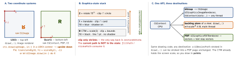

ios-platform · folio
In one line: Core Graphics (Quartz 2D) is a C, CPU, immediate-mode 2D renderer. You talk to a
CGContext — a state machine (CTM, clip, colours, line style, shadow, alpha, blend mode)
with a stack you push/pop with saveGState() / restoreGState() — build a path,
then paint it (fill / stroke), and the context rasterises into its destination: a
bitmap, a view’s backing store, or a PDF (vectors kept). UIKit’s
UIBezierPath, UIGraphicsImageRenderer and draw(_:) are thin wrappers over it.
Download PDF Print view LaTeX source


How it works
- Order: set state → build path (
move(to:),addLine,addCurve,addArc,addRect,addEllipse(in:),closePath) → paint (fillPath,strokePath,drawPath(using: .fillStroke)). Painting clears the path. - CTM maps user space → device space;
translateBy/rotate(by:)/scaleByconcatenate, so order matters (rotate-then-translate ≠ translate-then-rotate). Wrap every local transform in save/restore. - Fill rules: non-zero winding (default) vs even-odd (
fillPath(using: .evenOdd),usesEvenOddFillRule) — a ring = two circles, even-odd punches the hole regardless of direction. - Strokes straddle the path: half the width lands outside. A 1-pixel hairline = width
1/scalecentred on a pixel (offset0.5/scale), or it smears over two. - Clipping:
clip()/addClip()intersects the clip with the current path. Gradients (CGGradient+drawLinearGradient/drawRadialGradient) fill the whole clip — clip to your shape first. - Shadows (
setShadow(offset:blur:color:)) apply to every later draw; to shadow a group once:beginTransparencyLayer…endTransparencyLayer. - CGImage = immutable bitmap: width, height,
bitsPerComponent,bitsPerPixel,bytesPerRow(may be padded past w·4 — never assume), colour space,bitmapInfo. iOS-native: 8-bit BGRA premultiplied (.premultipliedFirst+.byteOrder32Little); passbytesPerRow: 0to let CG align it. - Colour spaces: sRGB · Display P3 (wide colour) · extended sRGB (values outside 0–1, 16-bit float, 8 B/px).
UIGraphicsImageRendererFormat.preferredRange(iOS 12):.automaticpicks by content,.standardforces 8-bit sRGB. - Renderer vs old API:
UIGraphicsImageRenderer(iOS 10) is block-scoped (no unbalanced begin/end), reusable, picks scale + range;UIGraphicsBeginImageContext(WithOptions)is deprecated in the iOS 27 SDK.
Example — badge: clip, gradient, restore, flip
let fmt = UIGraphicsImageRendererFormat(); fmt.scale = 1 // exact pixels
let r = UIGraphicsImageRenderer(size: CGSize(width: 300, height: 300),
format: fmt)
let badge = r.image { rc in
let ctx = rc.cgContext // UIKit-flipped: top-left
ctx.saveGState() // push
UIBezierPath(roundedRect: rc.format.bounds, cornerRadius: 48).addClip()
let g = CGGradient(colorsSpace: nil, colors: [UIColor.systemBlue.cgColor,
UIColor.systemTeal.cgColor] as CFArray, locations: [0, 1])!
ctx.drawLinearGradient(g, start: .zero, end: CGPoint(x: 0, y: 300),
options: []) // fills the CLIP, not a shape
ctx.restoreGState() // pop: clip gone again
ctx.translateBy(x: 0, y: 300); ctx.scaleBy(x: 1, y: -1) // to Quartz y-up
ctx.draw(logoCG, in: CGRect(x: 100, y: 100, width: 100, height: 100))
}draw(_:) rules
rect is the dirty area — draw only what intersects it; setNeedsDisplay(_ rect:) narrows it. Never call draw yourself. Default contentMode = .scaleToFill stretches the
old bitmap on resize — set .redraw. Opaque view + solid backgroundColor = no blending.
Which drawing tool?
| tool | cost | use for |
|---|---|---|
draw(_:) override | CPU redraw into a backing store on every setNeedsDisplay | custom content that changes rarely |
CAShapeLayer | path rendered by the render server; no app bitmap | shapes, rings, animated path / strokeEnd |
renderer → UIImage | one CPU draw, then just an image | badges, thumbnails, export, snapshots |
CGContext(data:…) | you own the bytes | pixel access, custom formats |
UIGraphicsPDFRenderer | vectors, resolution-free | invoices, reports, print |
PDF — out and in
let a4 = CGRect(x: 0, y: 0, width: 595, height: 842) // points = 1/72 inch
let data = UIGraphicsPDFRenderer(bounds: a4).pdfData { ctx in
ctx.beginPage() // one per page
"Invoice".draw(at: CGPoint(x: 48, y: 48), withAttributes: attrs) }
let page = CGPDFDocument(url as CFURL)?.page(at: 1) // 1-BASED index
// render: scale the CTM to fit getBoxRect(.mediaBox), flip, drawPDFPage(page)Traps
clip()withoutsaveGState— nothing outside that shape can be drawn again.- Gradient floods the view: forgot to clip to the path first.
- Animating by
setNeedsDisplayevery frame — a full CPU redraw per frame; animate a layer property or useCAShapeLayer. - “300×300” export is 900×900 px: the renderer’s default
scaleis the screen’s. - Reading pixels with
bytesPerRow = width·4— rows are padded; alpha is premultiplied, so un-premultiply before comparing colours.